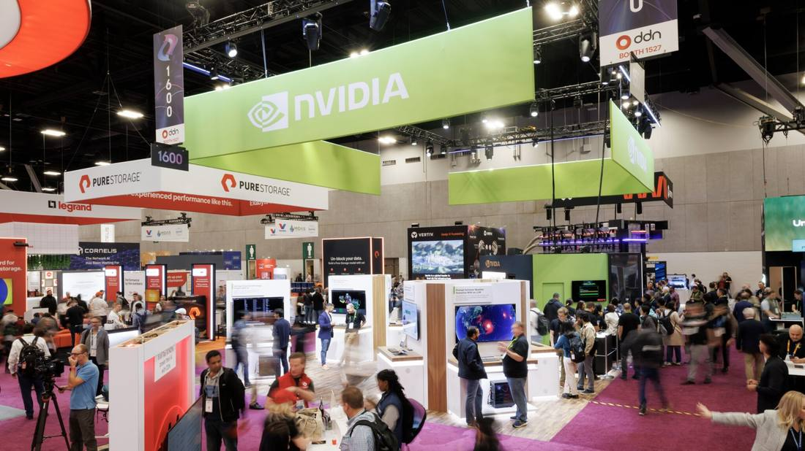

Nvidia Unveils Rubin HPC GPU With 50,000-Plus Cores and Nemotron for Science at SC26
NVIDIA unveiled Rubin HPC at SC26 on November 16, 2026, a Vera Rubin platform GPU with more than 50,000 CUDA cores for simulation and data processing in science, engineering and analytics, expected in 2028. Alongside it came Nemotron for Science, an open package built on the Nemotron 3.5 Super VL model with a nearly 50,000-question open chemistry dataset, available now on Hugging Face.

- 01THE ANNOUNCEMENT — On November 16, 2026, at SC26 in Chicago, NVIDIA announced Rubin HPC, a new GPU in the Vera Rubin platform for simulation and data processing in science, engineering and analytics, with more than 50,000 CUDA cores on one chip.
- 02THE SOFTWARE — The same day, NVIDIA introduced Nemotron for Science: the Nemotron 3.5 Super VL open model, the LitmusBench v0.2 open chemistry dataset of nearly 50,000 questions, and post-training recipes, all available on Hugging Face.
- 03THE PLATFORM — NVIDIA also announced a liquid-cooled Vera CPU rack with 192 Vera CPUs and about 300 TB of memory, due in early 2027, plus expanded CUDA-X libraries and Slurm support for quantum processors at supercomputing centers.
WHAT HAPPENEDWhat Happened
NVIDIA unveiled Rubin HPC at the SC26 supercomputing conference in Chicago on November 16, 2026, a new GPU in its Vera Rubin platform built for simulation and data processing in science, engineering and analytics. The chip carries more than 50,000 CUDA cores on a single GPU, a record count by NVIDIA's account, plus a sparse data acceleration capability and seventh-generation NVLink interconnect. NVIDIA expects systems using the chip to be available in 2028 and disclosed no price, memory capacity, power draw or benchmark figures.
Alongside the hardware, NVIDIA introduced Nemotron for Science, an open package for building AI agents for scientific discovery. It combines the Nemotron 3.5 Super VL open multimodal model with LitmusBench v0.2, an open dataset of nearly 50,000 chemistry reasoning questions, and post-training recipes for specialized research agents. The model and dataset are available now on Hugging Face, and NVIDIA said the tools are already in use at the U.S. Department of Energy's Argonne National Laboratory and at RIKEN in Japan. Life sciences companies Lila Sciences and Terray Therapeutics are using the model to extract chemical knowledge and plan experiments.
The same SC26 slate included a liquid-cooled Vera CPU rack for high-performance computing, with 192 Vera CPUs and about 300 TB of memory, due in early 2027, and NVIDIA's first MLPerf results for Vera Rubin: the company said its NVL72 system swept every MLPerf Training v6.1 benchmark and delivered up to twice the per-GPU performance of the GB300 NVL72 in its debut, a result NVIDIA itself notes is provisional pending MLCommons verification.
WHY IT MATTERSA science GPU, not an AI training GPU
Rubin HPC is aimed at a different bottleneck from the Rubin GPUs built for model training. Scientific simulations, climate models, genomic analysis, engineering design and financial risk calculations spend much of their time moving scattered data, not doing dense matrix math, and NVIDIA's pitch is that the chip balances compute with data movement: sparse data acceleration to keep 50,000 cores fed, and seventh-generation NVLink to move data between GPUs. The workloads are the ones AI agents now run in loops, generating candidate molecules or materials, simulating them, and using the results to pick the next candidates.
The 2028 availability date matters as much as the core count. This is a roadmap announcement, not hardware customers can buy, and NVIDIA published no performance figures against the current Rubin GPU. What is shippable today is the software side: Nemotron for Science, the CUDA-X library expansions, and the open chemistry dataset. The strategy is to make the agent-for-science workflow NVIDIA's before the hardware arrives.
WHAT TO WATCHWhat to watch next
Whether the MLPerf Training v6.1 results for Vera Rubin survive MLCommons verification, and whether NVIDIA publishes the memory, power and pricing figures it withheld for Rubin HPC. The Vera CPU rack due in early 2027 is the nearer-term hardware test of the platform.
Adoption of Nemotron for Science is the nearer-term software test: whether research labs beyond Argonne and RIKEN build agents on the open model and dataset, and whether the LitmusBench chemistry benchmark becomes a reference point the way other open benchmarks have. NVIDIA reports third-quarter earnings on November 17, after the market closes, and the call is likely to be the next moment the company is pressed on Rubin demand and the leadership transition.
SIGNAL JUDGMENT — ANALYSISHardware for 2028, software for today
Tokenta Signal's judgment: Rubin HPC is a statement of direction, not a product, and NVIDIA knows it. The core count is a record, but with no memory, power or benchmark figures and availability two years out, the chip's job today is to tell the scientific computing market that the Vera Rubin platform will have a simulation-native member. The real shipment is Nemotron for Science: an open model, an open benchmark and post-training recipes that put NVIDIA's agent stack inside research labs now, while the hardware catches up. If the chemistry dataset and the model become the default way labs build science agents, the 2028 GPU arrives into a market NVIDIA already owns. If they do not, Rubin HPC is a very large chip waiting for a workflow.
WHAT REMAINS UNCERTAINWhat Remains Uncertain
EVIDENCEEvidence
Morningstar reported on November 16, 2026 that NVIDIA introduced Nemotron for Science, an open chemistry dataset and post-training recipes to help researchers build AI agents for scientific discovery, built around the Nemotron 3.5 Super VL model, with the model and datasets available on Hugging Face.
PRIMARY SOURCESPrimary Sources
- NVIDIA Blog: At SC26, NVIDIA Unveils the Latest Advancements in Scientific Computing
https://blogs.nvidia.com/sc26-news/ - Morningstar: Nvidia Launches AI Platform for Science Experiments
https://www.morningstar.com/news/dow-jones/202611166916/nvidia-launches-ai-platform-for-science-experiments - StorageReview: NVIDIA SC26: Rubin HPC GPU With 50,000 CUDA Cores Due in 2028
https://www.storagereview.com/news/nvidia-sc26-rubin-hpc-gpu-vera-cpu-hpc-rack-nemotron-for-science-quantum